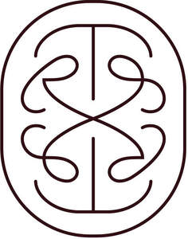

Trade Mark Journal No.2026/012 20 March 2026
UK00004350359 6 March 2026 (6,24,37,42,44)

- Class 6
- Architectural metalwork for use in building.
- Class 24
- Interior decoration fabrics; Textiles for interior decorating; Fabrics for interior decorating.
- Class 37
- Painting, interior and exterior; Interior refurbishment of buildings.
- Class 42
- Interior design; Architectural design for interior decoration; Architectural design for exterior decoration; Design of interior decoration; Architectural design; Decor (Design of interior -); Interior decor design; Design of interior decor; Interior decorating design; Design of building interiors; Interior and exterior design services; Commercial interior design; Interior design services; Design services for the interior of buildings; Architecture design services; Design services for architecture; Shop interior design; Design services for building interiors; Interior architectural services; Design of building exteriors; Preparation of architectural design; Architecture; Architectural design services; Space planning [design] of interiors; Design of furnishings; Design of buildings; Design services relating to interior decoration; Architectural services for the design of buildings; Design and development of computer hardware architecture; Furnishing design services for the interiors of buildings; Interior design services for shops; Design of furniture; Construction design; Consultancy in the field of architectural design; Design services relating to architecture; Design services relating to interior decorating for homes; Architectural services for the design of office buildings; House design; Consultancy relating to selection of furnishing fabrics [interior design]; Architectural services for the design of commercial buildings; Consultancy relating to selection of curtaining [interior design]; Planning [design] of buildings; Consultancy services relating to interior design; Interior decorating; Interior decoration consultation; Design consultancy.
- Class 44
- Landscape design; Design (Landscape -).
TR Studio Limited